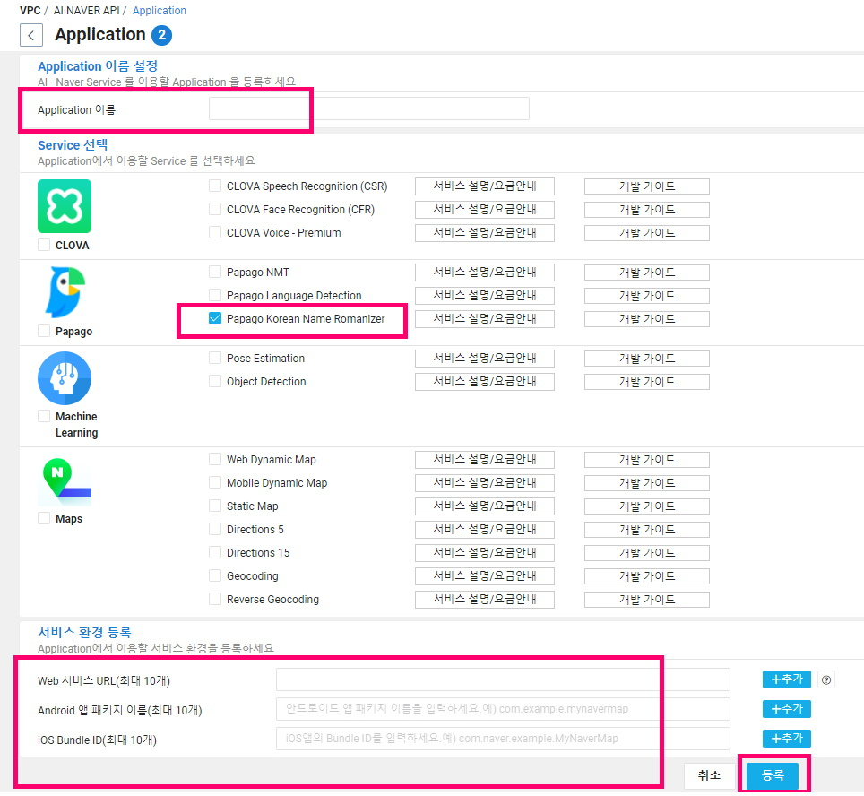
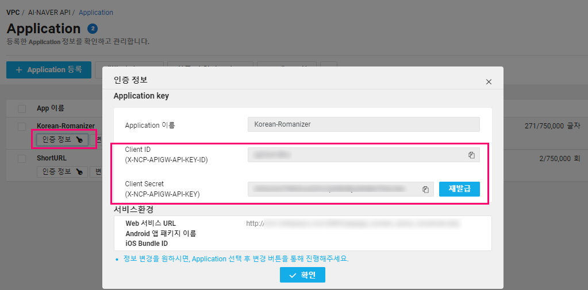

1. PHP로 네이버 클라우드 API를 호출하는 샘플 예제
PHP로 네이버 클라우드 API를 호출하는 샘플 예제입니다.
써드아이시스템이 네이버 클라우드 프리미엄 파트너사로 활동하면서 보유하게 된 네이버 클라우드와 관련된 여러 기술 노하우들을 많은 분들께 공유하려고 합니다.
Papago Korean Name Romanizer는 한글로 된 이름을 로마자 표기로 변환해주는 서비스로, 현행 로마자 표기법을 따라 변환한 이름과 통계적으로 많이 사용되는 로마자 이름도 함께 제안 받을 수 있습니다.
Papago Korean Name Romanizer는 OpenAPI 형태로 제공되며 여기서는 PHP로 호출하는 방식을 살펴볼텐데, 우선 전체 소스코드를 살펴보고 다음으로 주요 코드를 상세하게 살펴보겠습니다.
Papago Korean Name Romanizer는 무료로 제공되는 서비스이며, 일 25,000자, 월 750,000자 내에서 사용 가능하며 상향이 필요한 경우 고객지원으로 문의하면 됩니다.
Papago Korean Name Romanizer를 이용하기 위해서는 [네이버 클라우드 콘솔] - [AI·NAVER API] - [Application]에서 등록을 해야 합니다.
아래와 같이 NAVER 서비스에서 Papago Korean Name Romanizer를 선택하고, 이름과 사용할 서비스 환경을 입력하고 등록하면 됩니다.
Papago Korean Name Romanizer는 웹페이지, 모바일앱 어디서든 사용 가능하며 URL이나 앱 패키지이름, Bundle ID 등을 입력하시면 됩니다.

Application 등록을 하고 나면 다음과 같은 화면을 볼 수 있는데 여기서 인증 정보를 확인해야 합니다.

Papago Korean Name Romanizer API를 호출하려면 Client ID와 Client Secret 로 이루어진 Application Key를 사용해야 하는데 아래와 같이 [인증 정보] 버튼을 클릭하면 확인할 수 있습니다.

<?php
$korean_name = "변환할 한글 이름";
$client_id = "Client ID";
$client_secret = "Client Secret";
$enc_korean_name = urlencode($korean_name);
$getvars = "query=".$enc_korean_name;
$api_url = "https://naveropenapi.apigw.ntruss.com/krdict/v1/romanization?".$getvars;
$is_post = false;
$ch = curl_init();
curl_setopt($ch, CURLOPT_URL, $api_url);
curl_setopt($ch, CURLOPT_POST, $is_post);
curl_setopt($ch, CURLOPT_RETURNTRANSFER, true);
$headers = array();
$headers[] = "X-NCP-APIGW-API-KEY-ID: ".$client_id;
$headers[] = "X-NCP-APIGW-API-KEY: ".$client_secret;
curl_setopt($ch, CURLOPT_HTTPHEADER, $headers);
$json_response = curl_exec ($ch);
$status_code = curl_getinfo($ch, CURLINFO_HTTP_CODE);
curl_close ($ch);
if($status_code == 200){
$rows_response = json_decode($json_response, JSON_OBJECT_AS_ARRAY);
if (count($rows_response["aResult"]) > 0){
$rows_result = $rows_response["aResult"][0];
$sFirstName = $rows_result["sFirstName"];
$aItems = $rows_result["aItems"];
}else{
$roman_name = "변환할 수 없는 이름입니다";
}
}else{
$roman_name = "Error 내용:".$json_response;
}
?>
$client_id = "Client ID";
$client_secret = "Client Secret";
네이버 클라우드 콘솔에서 Papago Korean Name Romanizer 서비스를 등록하고 인증 정보에서 확인한 [Client ID] 와 [Client Secret]를 가져와서 사용하면 됩니다.
$enc_korean_name = urlencode($korean_name);
$getvars = "query=".$enc_korean_name;
$is_post = false;
변환할 한글 이름을 urlencode로 인코딩하고, GET 방식으로 호출하면서 넘겨줄 변수에 할당합니다.
$api_url = "https://naveropenapi.apigw.ntruss.com/krdict/v1/romanization?".$getvars;
Papago Korean Name Romanizer의 API URL은 위와 같고, GET 방식으로 호출하므로 url 뒤에 파라미터를 붙여서 전송합니다.
$headers = array();
$headers[] = "X-NCP-APIGW-API-KEY-ID: ".$client_id;
$headers[] = "X-NCP-APIGW-API-KEY: ".$client_secret;
위에서 가져온 Application Key를 호출할 API에 헤더값으로 설정해서 호출하게 됩니다.
$rows_response = json_decode($json_response, JSON_OBJECT_AS_ARRAY);
if (count($rows_response["aResult"]) > 0){
$rows_result = $rows_response["aResult"][0];
$sFirstName = $rows_result["sFirstName"];
$aItems = $rows_result["aItems"];
foreach ($aItems as $item){
$roman_name = $item["name"];
$score = $item["score"];
}
}else{
$roman_name = "변환할 수 없는 이름입니다";
}
Papago Korean Name Romanizer에서 json형태로 반환된 값을 배열에 담아 사용하면 됩니다.
반환되는 값은 한글 성과 변환된 로마자 이름과 빈도수가 담긴 배열입니다.
Papago Korean Name Romanizer에서 변환할 수 없는 이름일 경우 상태코드는 정상이지만 배열에 정보가 없기 때문에 예외처리를 해주어야 합니다.
Papago Korean Name Romanizer 서비스는 과도한 사용을 방지하기 위해 일별 25,000자, 월별 750,000자의 제한이 있습니다.
그리고 지정된 한도 내에서 일정한 사용을 초과하면 알람을 받도록 설정할 수 있습니다.
아래처럼 Application 등록 화면에서 [한도 및 알람 설정] 버튼을 클릭하면 확인할 수 있습니다.

https://api.ncloud-docs.com/docs/ai-naver-papagokoreannameromanizer
문서 최종 수정일 : 2021-05-24
PHP로 네이버 클라우드 API를 호출하는 샘플 예제입니다.
C#으로 네이버 클라우드 API를 호출하는 샘플 예제입니다.
네이버 클라우드에서 길고 복잡한 URL을 간단하고 짧게 바꿔주는 API nShortURL을 PHP로 이용하는 샘플 예제입니다.
네이버 클라우드에서 한글로 된 이름을 로마자 표기로 변환해주는 API Papago Korean Name Romanizer를 PHP로 이용하는 샘플 예제입니다.